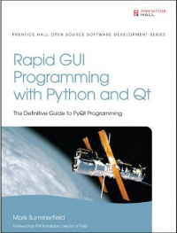

Rapid GUI Programming with Python and Qt
From the Website of the Author

This book teaches programmers how to write programs using PyQt 4, the Python bindings for the Qt 4
application development framework. PyQt 4 is probably the fastest and easiest route into GUI
programming and works on Windows, Mac OS X, and most operating systems that use the X Window System,
such as Linux and many Unices. Note that the book is also useful for PySide programmers.
The book will be useful to people who program professionally as part of their job, whether as
full-time software developers, or those from other disciplines, including scientists and engineers,
who need to do some programming in support of their work. It is also suitable for students-the only
prerequisite is basic knowledge of an object oriented programming language, for example, Java or C++,
or of course Python itself.
The book is ~550 pages (648 including the appendices and index), has a foreword by Phil Thompson creator
of PyQt, and is published by Prentice Hall.
Details
Title: Rapid GUI Programming with Python and QtAuthor: Mark Summerfield
ISBN-10: 0132354187
ISBN-13: 978-0132354189
648 Pages